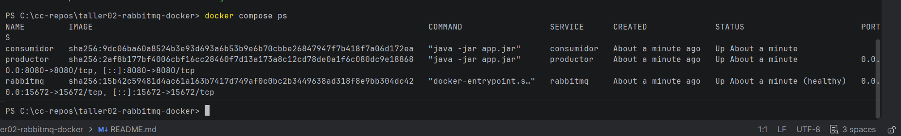
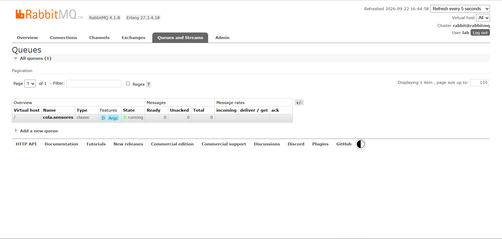
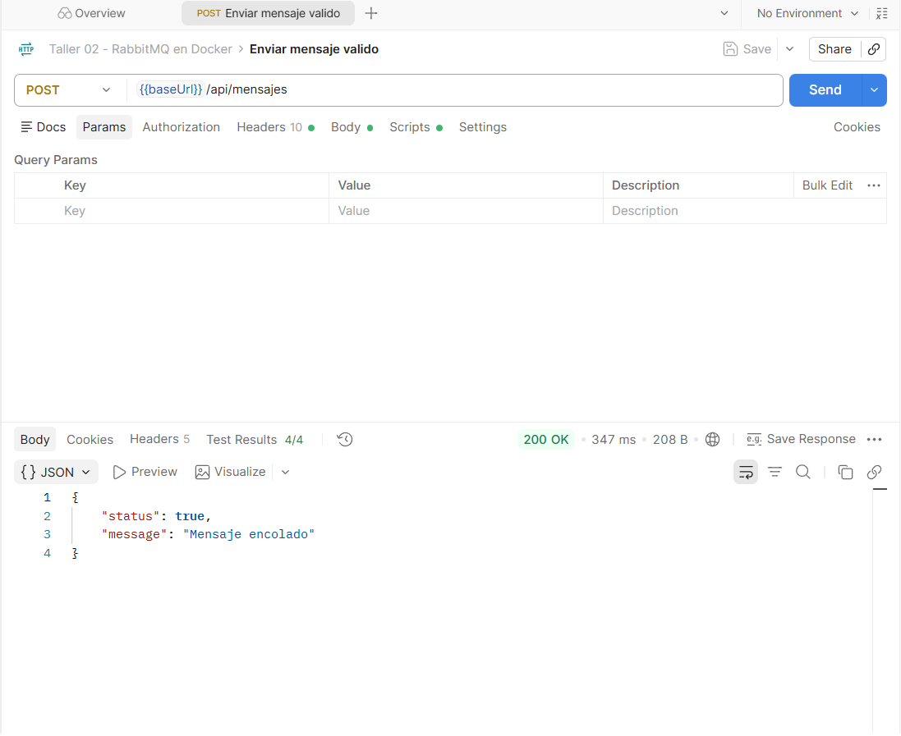
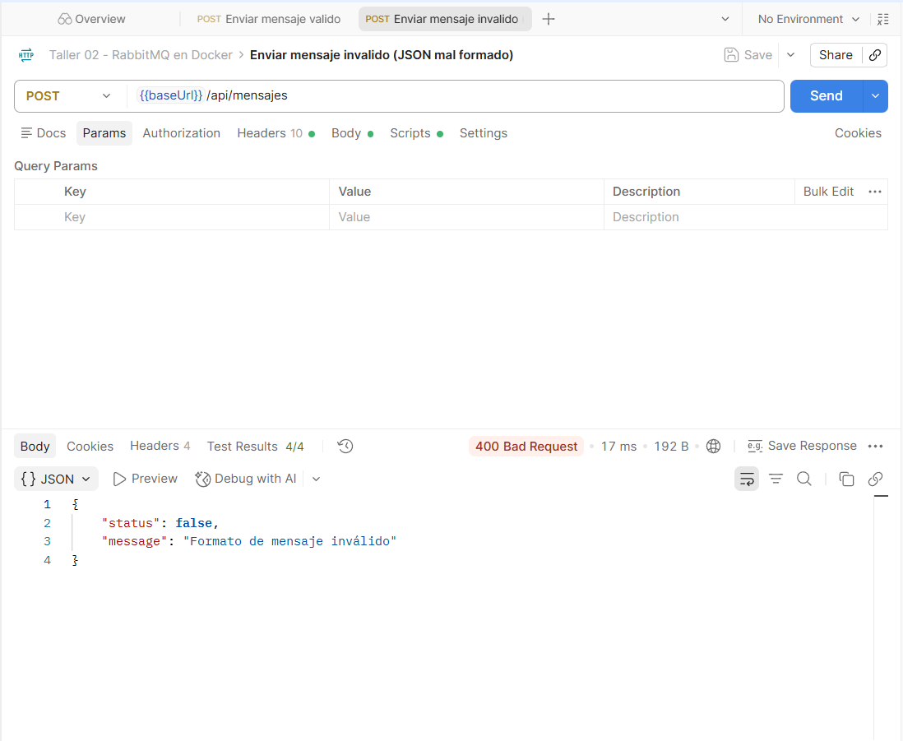
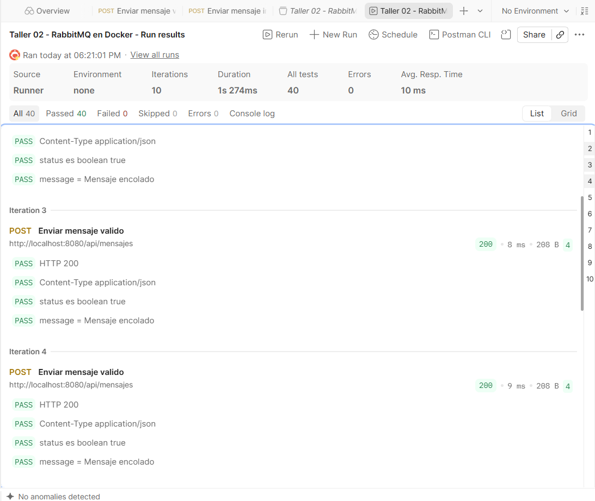
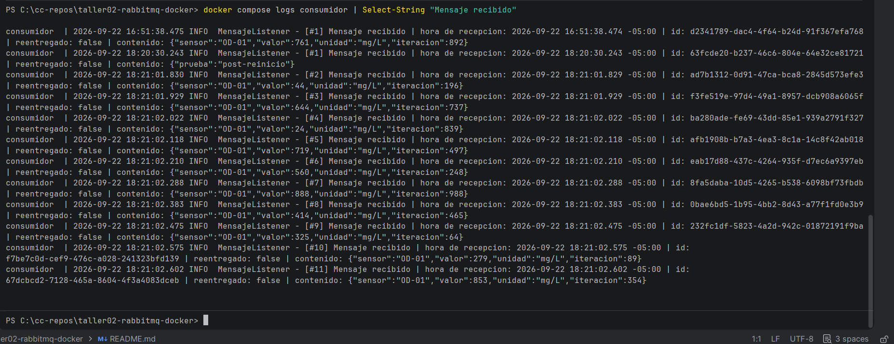
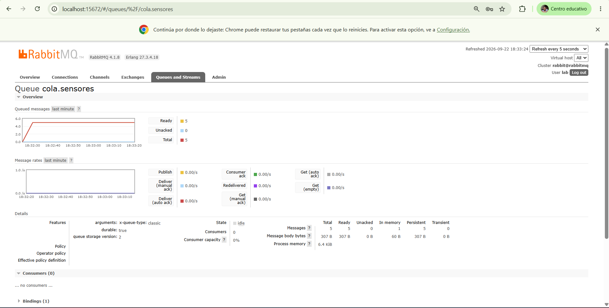
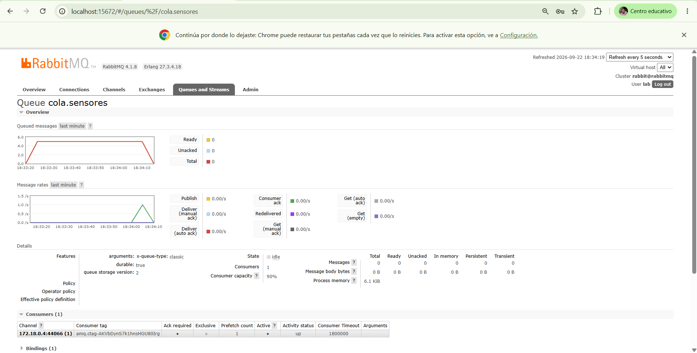
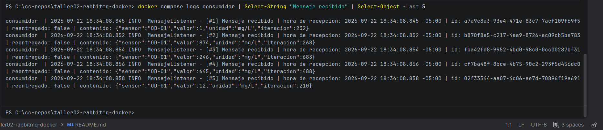

cola.sensores (Ready > 0, Consumers (0)), justo antes de docker compose restart rabbitmq.| Integrantes | Derly Dayana Garcia Carrillo Orlando Rojas Narvaez |
|---|---|
| Docente | Juan Carlos Polania Cortes |
| Semestre / Periodo | IX · 2026-2 |
| Repositorio | github.com/OrlandoRojasNa/taller02-rabbitmq-docker |
| Fecha | 22 de septiembre de 2026 |
Sistema de mensajería asíncrona completamente dockerizado. El equipo solo necesita Docker: el lenguaje, las librerías y el broker viven dentro de las imágenes.
Postman ──POST /api/mensajes──▶ productor ──AMQP──▶ [ rabbitmq : cola.sensores ] ──AMQP──▶ consumidor ──▶ logs
| Servicio | Tecnología | Función | Puerto publicado |
|---|---|---|---|
rabbitmq | RabbitMQ 4.1 + management | Intermediario. La cola durable cola.sensores se crea al arrancar desde definitions.json. | 15672 (consola) |
productor | Java 21 · Spring Boot 3.5 | API REST que valida el JSON y lo publica como mensaje persistente con confirmación del broker. | 8080 (API) |
consumidor | Java 21 · Spring Boot 3.5 | Lee la cola con ACK manual y registra el contenido y la hora de recepción en sus logs. | ninguno |
| Requisito | Implementación |
|---|---|
| Todo en contenedores | Dockerfiles multi-etapa: maven:3.9-eclipse-temurin-21 compila y eclipse-temurin:21-jre ejecuta. |
| Un único comando | docker compose up -d --build levanta los tres servicios. |
| Cola durable existente al levantar | load_definitions de RabbitMQ con durable: true. Las aplicaciones también la declaran con los mismos atributos (idempotente). |
POST + JSON, status booleano | POST /api/mensajes. La respuesta es record Respuesta(boolean status, String message) con Content-Type: application/json. |
| Retirar el mensaje solo después de procesarlo | acknowledge-mode: manual: basicAck después de registrar el mensaje, prefetch: 1. |
| Persistencia ante reinicios | Cola durable + mensajes PERSISTENT + volumen rabbitmq_data + hostname fijo. |
| Servicios por nombre, reintento de conexión | Host rabbitmq en la red de Docker. depends_on: service_healthy + reintentos automáticos de Spring AMQP. |
| Caso | HTTP | Cuerpo |
|---|---|---|
| Mensaje publicado | 200 | {"status": true, "message": "Mensaje encolado"} |
| Cuerpo vacío, no JSON o mal formado | 400 | {"status": false, "message": "Formato de mensaje inválido"} |
| RabbitMQ no disponible | 503 | {"status": false, "message": "No se pudo publicar el mensaje en la cola"} |
En un equipo que solo tenga Docker instalado:
git clone https://github.com/OrlandoRojasNa/taller02-rabbitmq-docker.git cd taller02-rabbitmq-docker docker compose up -d --build
| Recurso | Acceso |
|---|---|
| Consola de RabbitMQ | http://localhost:15672 · usuario lab · contraseña lab123 |
| Endpoint del productor | POST http://localhost:8080/api/mensajes |
| Logs del consumidor | docker compose logs -f consumidor |
| Colección de Postman | postman/Taller02-RabbitMQ.postman_collection.json |
El instructivo completo, con los comandos de cada caso de prueba, está en el README.md del repositorio.

docker compose ps: los tres contenedores en ejecución, rabbitmq en estado healthy. Solo se publican los puertos 15672 (consola) y 8080 (API).
cola.sensores ya existe, marcada con D (durable), sin haberla creado a mano.
200 OK, {"status": true, "message": "Mensaje encolado"}. Tests 4/4 (incluye la verificación de que status es booleano).
400 Bad Request, {"status": false, "message": "Formato de mensaje inválido"}. Tests 4/4.

[#2] a [#11], 18:21:01–18:21:02) con su contenido y hora de recepción. [#1] corresponde a mensajes de prueba previos.Con docker compose stop consumidor se publicaron 5 mensajes. Se acumularon en la cola y, al ejecutar docker compose start consumidor, se consumieron todos.

durable: true y los 5 mensajes son Persistent.

Con el consumidor detenido (docker compose stop consumidor) se publicaron varios mensajes desde Postman y se anotó el valor de Ready. Luego se reinició el broker con docker compose restart rabbitmq, se volvió a iniciar sesión en la consola y se comprobó que la cola tenía la misma cantidad de mensajes. Por último, docker compose start consumidor los procesó todos.
Los mensajes sobreviven porque se cumplen las cuatro condiciones a la vez:
| Condición | Dónde se configura |
|---|---|
| La cola es durable (su definición se guarda en disco) | rabbitmq/definitions.json → "durable": true |
| Cada mensaje es persistente (se escribe en disco) | PublicadorService → MessageDeliveryMode.PERSISTENT |
| Los datos del nodo viven fuera del contenedor | docker-compose.yml → volumen rabbitmq_data:/var/lib/rabbitmq |
| El nombre del nodo no cambia entre reinicios | docker-compose.yml → hostname: rabbitmq |
Además, el productor no necesita reiniciarse: Spring AMQP abre una conexión nueva en la siguiente publicación, y el consumidor reintenta conectarse cada 5 s.
cola.sensores (Ready > 0, Consumers (0)), justo antes de docker compose restart rabbitmq.
Si la API recibe un cuerpo que no es JSON válido, responde con status en false y no publica nada en la cola. Se anotó el total de cola.sensores, se envió Enviar mensaje invalido (JSON mal formado) desde Postman y se comprobó que el total no cambió.
La validación ocurre antes de tocar RabbitMQ: PublicadorService.validar() exige un objeto JSON con al menos un campo y sin contenido extra al final (FAIL_ON_TRAILING_TOKENS). Si falla, lanza MensajeInvalidoException, ManejadorErrores la convierte en 400 con {"status": false, "message": "Formato de mensaje inválido"} y en el log del productor queda Mensaje rechazado, no se publica: ….
| Cuerpo enviado | HTTP | ¿Se publica? |
|---|---|---|
{"sensor": "OD-01", "valor": } (mal formado) | 400 | No |
esto no es json (texto plano) | 400 | No |
| (cuerpo vacío) | 400 | No |
{"sensor": "OD-01"} basura (contenido extra) | 400 | No |
[1, 2, 3] o {} (no es un objeto con campos) | 400 | No |

cola.sensores antes de enviar el mensaje inválido.
400 Bad Request con "status": false y el total de la cola no cambia.| Entregable | Ubicación en el repositorio |
|---|---|
| Código fuente del productor y del consumidor | productor/src, consumidor/src |
| Dockerfiles y Docker Compose | productor/Dockerfile, consumidor/Dockerfile, rabbitmq/Dockerfile, docker-compose.yml |
| Instructivo | README.md |
| Colección de Postman exportada | postman/Taller02-RabbitMQ.postman_collection.json |
| Capturas | docs/evidencias/ |
| Declaración de uso de IA | docs/DECLARACION_IA.md y sección 7 de este informe |
Herramienta: Claude Code (Anthropic), modelo Claude Opus 5.5, desde la aplicación de escritorio de Claude.
Finalidad:
docker-compose.yml, Dockerfiles, configuración de RabbitMQ, el código del productor y del consumidor (Java 21 + Spring Boot) y las pruebas unitarias del productor.README.md).Qué se modificó del resultado: no se modificó el código generado por la herramienta. El trabajo de los integrantes sobre el resultado fue:
docker compose up -d --build.Los integrantes respondemos por el funcionamiento del proyecto entregado.